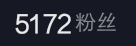

| 网站新样式说明 |
|
从去年来，这个仿Windows Vista
Aero主题的个人网站我修修补补已经成为了屎山力（悲，因为我对前端开发还不熟练（？），所以我计划重制这个网站，但为了让它不变成屎山，尽可能避免手敲，所以一直在找可视化HTML编辑器，试了许多都没有我满意的，直到我遇见了它——Microsoft
Office Word，不得不说，这玩意作为一个HTML编辑器还挺好使的。这个页面就是用Microsoft Office
Word做的，页面样式虽说有股年代感吧，但也能看。原本的Aero效果做出来只是为了炫耀的，结果做的烂不说，兼容性也差的一批，甚至还有些是直接从隔壁Stylestar论坛“偷”过来的，还不如这种简洁的布局。有时间再慢慢把其它子页面的样式也改一下 最终还是在VSCode里用手敲力，那个Office |
| 个人介绍 | ||||||||||||
|
我是DSY_xiaoluo，一个普普通通的初二学生。 在2020年，我朋友修好了他的旧电脑，于是我也请求他帮我修好我那大概是2012年的远古神机，实际上我们只插拔了一下内存条和检查了硬盘外观，就莫名其妙开机了。于是我花费一点点时间学习重装系统把原先的Windows XP升级到Windows 7，随后我想：“woc这玩意（指折腾电脑）不比电脑本身好玩？” 于是计划学习编程，但当时我别说英语了，就连汉语拼音都分不清，更别说编程了，最终，我选择了易-语-言，没错，就是被视为底层语言的易语言， 后来我又闲着没事想拥有个自己的网站，看了HTML速成，又学了Adobe Dreamweaver，总之一顿乱搞，终于，在2023年3月26日，我终于拥有自己的网站了 好好好，已经写了这么多了是吧，那 我发布的第一个视频的时间是2018年，没错，18年盛夏。我现在还记得是在抖音，昵称为“Mineceaft_小怕君”，主题是关于Minecraft的，内容是新人入住之类的。后续几乎是日更，几乎是每天熬夜做视频 在2019年，我脑子抽了立志成为像“ICE”（一个做MC无缝剪辑的大佬）一样的人，于是连夜把我的关注、点赞、收藏等列表删干净了，开始用手机和剪映制作无缝剪辑视频，这听起来确实不可思议，剪映我理解，但是手机是什么鬼啊喂，效果嘛。。。无缝是无缝，就是缺少些视觉冲击力， 给大家展示其中一个“无缝剪辑”视频看看吧
 2020年，也就是我旧电脑修好那年，我那朋友推荐我去B站上看视频。那段时间我的手机被没收了，因此在父母不在家的时间经常玩电脑。不知道干什么时就上B站看鬼畜，上文说过，我手机被没收了，所以一直没有注册账号 2021年，我注册了我的B站账号，看了ZDY（SYSTEM-ROMOS-ZDY）的视频，决定我也要混电脑圈，于是我在B站上发布了我的第一个视频——如何使用Limbo在手机上运行Windows。那个视频没多少人看，仅有1个赞——还是我朋友点的，在那之后我约等于放弃了。 2023年，我又闲得用易语言制作了一个恶搞程序，作用类似于Windows自带的用户账户密码。后来抱着水视频态度稍作修改后做视频发到了本站，没想到引起了剧烈的反响，我趁热打铁，立马按照评论区的建议更新程序，再后来，我上了初中，这个程序。。。烂尾了 之后的事就基本不用说了，我开坑了吐槽答辩系列（然而这个系列的视频并不是我做的，而是我朋友，他又想做视频又想不“玷污”自己的账号）。看了PD_yeeee的Channel4开始做架空电视台HOMO14 |
||||||||||||